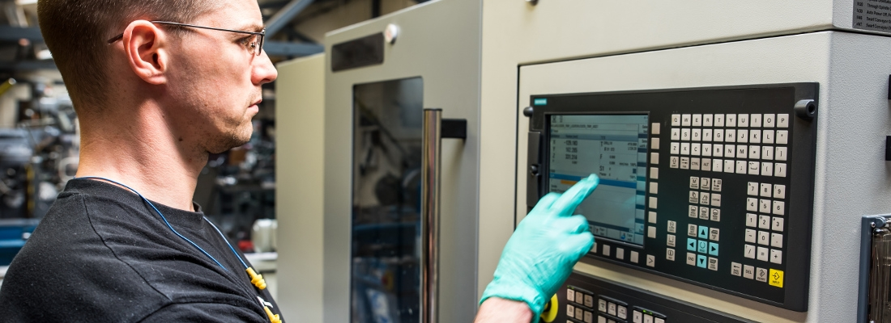

Curso Técnico em Automação Industrial
Curso Técnico em Automação Industrial

Característica
Automação Industrial é a aplicação de técnicas, softwares e equipamentos específicos em uma determinada máquina ou processo industrial, com o objetivo de aumentar a sua eficiência, maximizar a produção com o menor consumo de energia e matérias primas, menor emissão de resíduos de qualquer espécie, melhores condições de segurança, seja material, humana ou das informações referentes a esse processo, ou ainda, de reduzir o esforço ou a interferência humana sobre esse processo ou máquina.
O Técnico em Automação Industrial é o profissional capaz de projetar, instalar, adaptar e dar manutenção em processos de automação industrial, transferindo conhecimentos e habilidades para fazer frente à constante evolução tecnológica provocada pela complexidade dos processos produtivos e pelas mutações tecnológicas na fabricação de equipamentos.
Áreas de Atuação
O profissional técnico em automação industrial pode desempenhar seus conhecimentos e habilidades em diferentes áreas como:
- empresas de ramos industriais, preferencialmente as de processos de fabricação contínuos, tais como a industria alimentícia,bebidas, têxteis e vestuário, móveis e esquadrias, máquinas e equipamentos, metalmecânica,construção civil entres outras
- Empresas de prestação de serviços e como profissional autônomo
Carga Horária
1200h
Turno
Noturno
Duração Mínima
2 anos e meio
Requisito Mínimo
Ensino Médio concluído ou em curso
Coordenação
Luís Paulo Hauschild
Centro de Educação Profissional
Fone: (51) 3714-7000 ramais 5294 e 5358
Sala 408-9
Contato